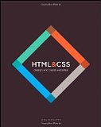
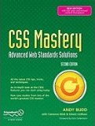

A List Apart - Code and design
Smashing Magazine's CSS tips
Ask the CSS guy
A to Z CSS - bite-sized video screencasts.
CSS Play
CSS Basics
HTML Dog - CSS and HTML Tutorials
Learn layout
Web developers handbook
you might not need js
W3C CSS Validation Service
W3C Link checker - looks for issues in links, anchors and referenced objects.
ArchiveReady- imperfect but still useful validatorCSS Tidy online + util
Clean CSS - CSS Formatter and Optimiser
iSnoop CSS Minifier
CSS minifier - Make CSS files smaller.
CSS Lint - Improve your code (remove duplicates etc)BrowserShots - Preview a design in multiple web browsers.
Browser-details - Browser detection.
CSS Typeset - Generate CSS rules online.
Fiddler2 - Web debugging proxy for any browser
FontAwesome - Web icons embedded in an open source font.
HowToCenterInCSS - a gazillion ways to centre.
jplayer - jquery audio player.
jsfiddle - Test your code online.
Kotatsu Table HTML Generator
-prefix-free - Use only unprefixed CSS properties everywhere.
Sass - an extension for CSS3 - nested rules, variables etc.
Selenium - Automate browsers.
SortTable - Make all your tables sortable
STrace and HTTPReplay - Analyze and replay HTTP traffic
SubtlePatterns - Tileable textured patterns, free to use.
Tufte CSS - Use the design ideas of Edward Tufte
Eric Meyer CSS Reset
YUI CSS ResetBrowser compatibility tables:
FindMeByIP - HTML 5 & CSS 3
CaniUse - HTML 5 & CSS 3
html5please
Common fonts to all versions of Windows & Mac equivalents
Bootstrap - from Twitter
GridByExample - Examples of Grid
LessCss - A CSS pre-processor, meaning that it extends the CSS language
Object Oriented CSS
BugZilla
Microsoft connect
Chromium issues
Open Radar - OS X/Safari Community bug reports.
 HTML and CSS: Design and Build Websites
by Jon Duckett, 1st Edition, Nov 2012 CSS Mastery
by Simon Collison
SS64 Discussion Forum
news:comp.infosystems.www.authoring.stylesheets
“Fashion fades, only style remains the same” ~ Coco Chanel